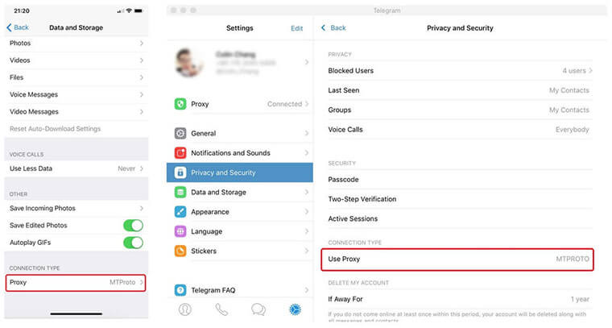

Telegram - 畅享安全自由通讯
1. Telegram 简介
Telegram(俗称TG或电报) 是一个跨平台的实时通讯应用，它的客户端是自由及开放源代码应用，但是它的服务器是专有应用。用户可以相互交换加密与自析构的消息，以及照片、影片、文件，支持所有的文件类型。
或许你之前没有听说过这款应用，没关系，因为它所属的公司 Telegram Messenger LLP 是一家独立的非营利公司，没有商业利益驱动，不制造新闻，不炒作，产品不被大众所知也就不难理解了。
专为聊天而生。厌倦了微信绿和微博橙，看到这种墨蓝色调还是蛮舒服的。它整体采用了 Material Design 的设计规范，功能都集中在侧滑抽屉中，主界面为聊天界面，点击主界面右下角的「大美圆」可以发起聊天。
几乎无懈可击的安全与私密性。看下用户就知道了，IS,普京,川普，没错他们都在用... 相比微信等，不解释，大家懂...
2. Telegram 下载
官方网站有正式发布 Android、iOS、Mac OS X 与 正在 Beta 的 Windows Phone 的版本。
https://telegram.org/ 需要翻墙访问😢😢😢
3. MTProxy
一次翻墙下载客户端没问题，一直翻墙使用当然也没问题，估计对翻墙不熟悉的童鞋们要哭了，还好Telegram提供了代理设置。
Telegram支持Socket5和MTProy两种代理。关于Socket5代理，Brook和V2Ray可以简单搭建不再赘述。这里我们推荐下Telegram特有的MTProxy代理，这是官方为TG专门设计的。
下面我们以 Debian9 为例，通过官方提供的docker镜像，快速的大家一台 MTProxy服务器，这就搞起来吧...
$ sudo -i
# 同步时间
$ cp /usr/share/zoneinfo/Asia/Shanghai /etc/localtime
# 安装docker
$ curl -fsSL https://get.docker.com -o get-docker.sh
$ sh get-docker.sh
# 获取官方docker镜像
$ docker pull telegrammessenger/proxy
# 运行docker容器
$ docker run -d -p443:443 --name=mtproto-proxy --restart=always -v proxy-config:/data telegrammessenger/proxy:latest
# 查看代理信息
$ docker logs mtproto-proxy
找到形如 tg://proxy?server=xxx&port=443&secret=xxx的部分就是代理信息。其中包含了服务器（server)，端口(port),密钥(secret)三部分，在客户端中添加MTProxy即可。
不同的客户端添加代理的入口有锁区别，一般在Privacy and Security或 Data and Storage设置中找到Use Proxy添加代理。
至此，即可在不翻墙的情况下使用Telegram了。
